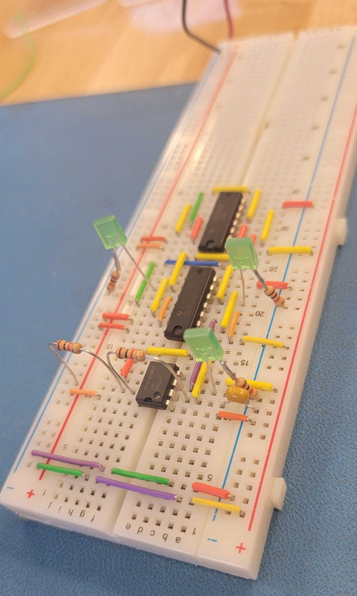

// Hello World. Welcome to my portfolio
victoria();
Electronics Technician + Software Engineering Student
- Embedded C & Microcontrollers (Arduino, ESP32)
- PLCs & Ladder Logic (Allen-Bradley)
- PCB Design + Soldering + Debugging
- Digital Logic: Verilog & HDL basics
- Serial Interfaces: UART / SPI / I²C
Passionate about programming microcontrollers, embedded systems, and building custom hardware + software projects. Below are the main modules of this program: